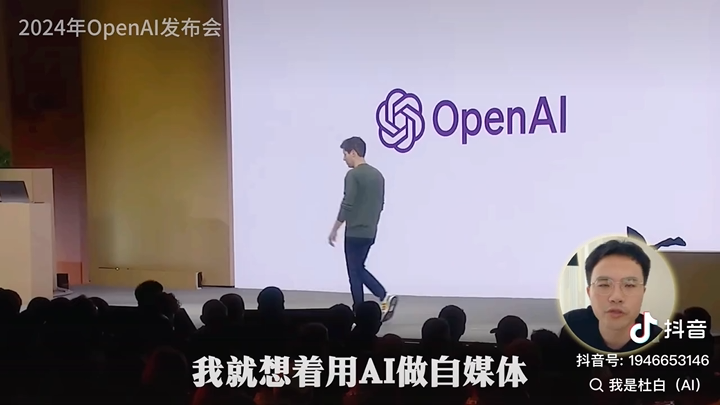

AI 发布会与功能更新
记录 ChatGPT、Claude、Gemini、DeepSeek、豆包、可灵、即梦等产品的关键更新，提炼普通人真正用得上的变化。

板块一
按国内、国外、人物观点、视频发布会、公众号内容做分类，方便持续更新。
记录 ChatGPT、Claude、Gemini、DeepSeek、豆包、可灵、即梦等产品的关键更新，提炼普通人真正用得上的变化。
大模型、AI 应用、智能硬件、内容平台政策和国产工具更新。
OpenAI、Anthropic、Google、Meta、Runway 等产品和研究进展。
整理创业者、研究员、产品负责人对 AI 趋势和能力边界的观点。
收藏值得反复看的公众号文章，按学习、工具、商业、内容分类。
GitHub 自动同步
板块二
不是堆工具，而是按“能解决什么问题”来整理。
板块三
把你的失败复盘、口播稿、选题库、工具流程和文章沉淀成资料库。